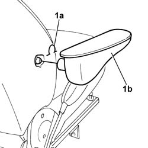

7045B18 front seat arm rest
- Path
- Procedures > 70 FITTINGS > 7045 FRONT SEATS > 7045B front seat head restraint/arm rest > 7045B18 front seat arm rest
- Kind
- repair procedure (removal / refitting; the operation number is the code)
- Applies to
- all engines; all production periods
- Interactive page
- https://sloeber94.github.io/elrnDB-fDbl/en/#/2585182
Applies to: all engines; all production periods
 Removing
Removing
 Refitting
Refitting1. Release the retaining clip (1a) and remove the armrest (1b).

Applies to: all engines; all production periods
Refitting
RemovingFit the retaining clip to the armrest.
Fit the armrest in its seating until the retaining lugs click into place.